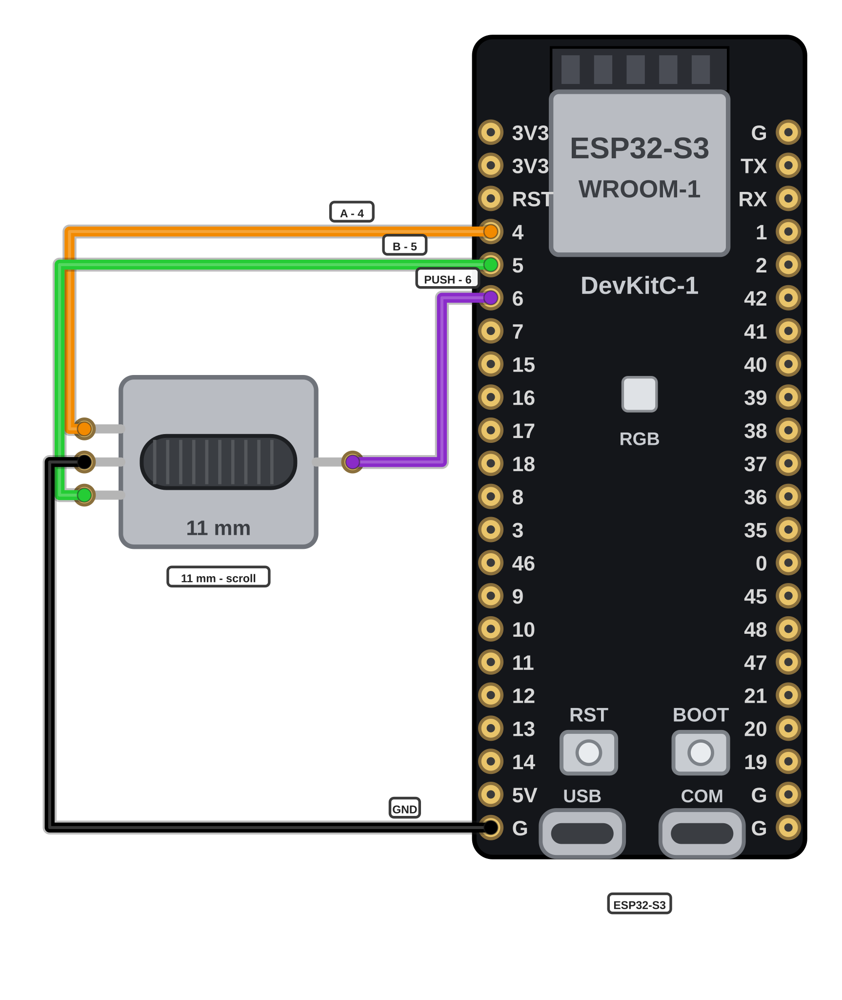

הגלגלת הקדמית נכנסת לברדבורד: גלילה וקליק אמצעי — ובסוף הכרטיסייה עובד עכבר בסיסי שלם.
בתוך הגלגלת יש שני מגעים — A ו-B. הסדר שבו הם נסגרים מגלה ללוח לאיזה כיוון הגלגלת מסתובבת — כך הגלילה יודעת לעלות וגם לרדת.
מכניסים את הגלגלת הקדמית (11 מ"מ) לברדבורד — כל רגל בטור משלה — ומחווטים לפי האיור: רגל A אל חיבור GPIO 4 של הלוח, רגל B אל GPIO 5, מגע הלחיצה אל GPIO 6 והרגל המשותפת אל GND.

פותחים את 03_basic_mouse ב-Arduino IDE ומעלים ללוח.
ההגדרות נשארות כמו בכרטיסיות הקודמות: לוח ESP32S3 Dev Module ו-USB Mode על USB-OTG (TinyUSB). אם ההעלאה לא מתחילה — מחזיקים את BOOT לחוץ, לוחצים קצר על RESET, משחררים ומנסים שוב.
פותחים דף ארוך במחשב ומסובבים את הציר של הגלגלת לאט עם אצבע: על כל נקישה שמרגישים באצבע — הדף נגלל צעד אחד. בודקים גם את הכיוון השני — הדף נגלל בחזרה.
לוחצים על הציר עצמו — זה הקליק האמצעי. מנסים אותו: קליק אמצעי על קישור פותח אותו בלשונית חדשה.
בודקים הכול ביחד — שני הקליקים, הסמן והגלילה: עכבר בסיסי שלם עובד על השולחן.
הדף נגלל צעד אחד על כל נקישה של הגלגלת — בשני הכיוונים.
לחיצה על הציר נותנת קליק אמצעי.
בפרויקט הזה שני דברים דורשים כבוד — המלחם והסוללה. מלחימים רק כשהמורה ליד ולא נוגעים בקצה המתכת של המלחם — והסוללה נכנסת למחזיק רק אחרי שהמורה בדק את הכיוון שלה. סוללה חמה, נפוחה או פגועה עוברת למורה מיד. כל הכללים בכרטיסיית R1.